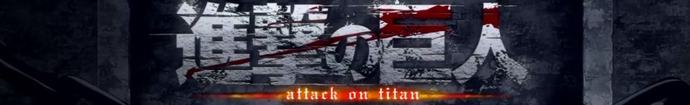

Shingeki no Kyojin (Attack on Titan)
Attack on Titan (Japanese: 進撃の巨人, Hepburn: Shingeki no Kyojin, lit. "The Attack Titan") is a Japanese manga series written and illustrated by Hajime Isayama. It is set in a world where humanity lives inside cities surrounded by enormous walls that protect them from gigantic man-eating humanoids referred to as Titans; the story follows Eren Yeager, who vows to exterminate the Titans after a Titan brings about the destruction of his hometown and the death of his mother.

Setting
The plot mostly takes place within three walls, said to be the last location where humans still live, as the rest of the world has been taken over by the Titans, giant humanoid beings who attack and eat humans on sight.
Plot
The story revolves around a boy named Eren Yeager, who lives in the town of Shiganshina, located on the edge of Wall Maria, the outermost of three circular walls protecting humanity from Titans said to have killed all other humans one hundred years prior to the start of the story. In the year 845, the wall is breached by two new types of Titan, named the Colossal (alternatively named the Colossus) and the Armored, and Eren's mother is eaten by a Titan while Eren escapes. He swears revenge on all Titans and enlists in the military along with his childhood friends, Mikasa Ackerman and Armin Arlert. During their first battle, Eren learns that he also has the mysterious ability to briefly turn himself into a Titan as well, which draws the attention of the nation's military, which intends to use his newfound power to reclaim Wall Maria. As the battle against the Titans intensifies, Eren and his companions fight to defend their land while uncovering the mysteries about the Titans, their own civilization, and what lies beyond the walls, engaging themselves in a conflict to decide the fate of the entire world.